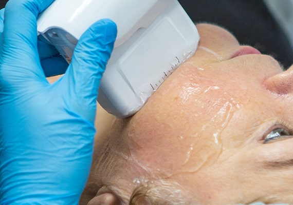
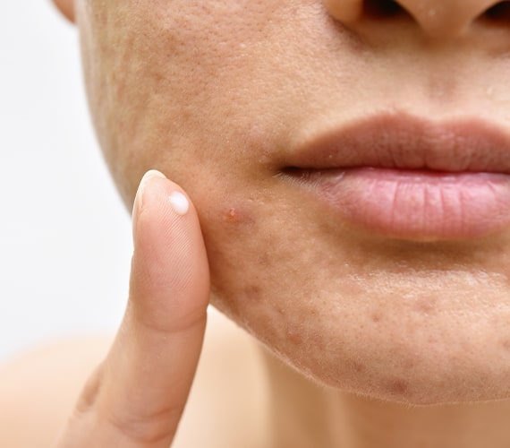

Interested in Fraxel Laser Treatment?
Our Fraxel laser clinic in London is run by experienced dermatologists who specialise in pain-free treatment. Fill out the form or call us on 020 7467 3720 to discuss your specific requirements.
The Fraxel laser is a treatment that uses fractional laser technology to address minor to severe skin damage. The Fraxel laser is effective for treating scarring, sun spots, wrinkles, and other signs of ageing. It targets both the superficial and deeper layers of the skin, resulting in a smoother, fresher, and more youthful appearance. It can be used effectively on any part of the body. The Fraxel laser treatment is carried out by one of our highly trained specialists. During your initial consultation, the specialist will discuss the procedure with you and develop a personalised treatment plan. For optimal results, it is recommended that patients undergo 3 to 6 sessions of Fraxel laser treatment at our dermatology clinic in London. Each session will take between 20 to 30 minutes.
Fraxel laser treatment uses patented fractional technology to target damaged skin with microscopic laser columns that penetrate deep into the skin. This advanced laser technology treats only a fraction of the tissue at a time, leaving the surrounding tissue untouched. This selective treatment stimulates your body's natural healing process, replacing old and damaged cells with fresh, glowing, and healthy skin.
The microtrauma created by the Fraxel laser stimulates the production of collagen, which plumps the skin and helps reduce imperfections such as scarring, sun spots, wrinkles, and other signs of ageing. The treatment is effective on both superficial and deeper layers of the skin, resulting in a smoother, fresher, and more youthful appearance. A dermatologist will carry out your Fraxel laser treatment in London, ensuring it is tailored to your specific skin type and condition. Depending on the level of the treatment, you may experience some redness or swelling after the procedure. These side effects typically subside within 1 to 4 days, allowing you to quickly return to your daily activities. Fraxel laser treatment is a highly effective and minimally invasive option for rejuvenating your skin and addressing various skin concerns.
The Fraxel laser treatment delivers both immediate and progressive results. Shortly after the treatment, you can expect to see smoother, fresher skin, giving you a more youthful appearance. As early as after your first session, you should notice an improvement in your skin's texture, with reduced wrinkles, pores, and brown spots. Acne scars and surgical scars will appear flatter and more even. Over the following 3 to 6 months, further improvement will be seen as new collagen is produced in the deeper layers of the skin. The overall results are long-lasting and depend on your lifestyle, skin condition, age, and skincare regimen.
Patients will often require 4 to 6 sessions of Fraxel laser treatment to achieve optimal results. The specific number of treatments you will need depends on the area to be treated, your skin condition, and the desired results. A minimum of 3 sessions at our dermatology clinic in London is recommended. We will work with you to identify the appropriate level of treatment and your preferred downtime.
Immediately after the treatment, you will experience redness, swelling, and sometimes pinpoint bleeding. Swelling is most noticeable on the first morning after treatment, particularly under the eyes. Any laser treatment will cause varying degrees of redness and swelling in the treatment area, with swelling usually lasting 2 to 3 days. Most people will feel some heat-related discomfort associated with the treatment, which is typically temporary and localised within the treatment area. These common side effects last from several days to a couple of weeks, depending on the level of treatment. Itching can also occur as part of the normal wound healing process or may occur due to infection, poor wound healing, or contact dermatitis. A flare-up of acne or formation of milia (tiny white bumps or small cysts on the skin) may occur, but these symptoms usually resolve completely. Herpes Simplex Virus (cold sore) eruption may result in rare cases in a treated area that has previously been infected with the virus. If pigmentation is present on the skin, this may darken soon after treatment and last a few days until it gently flakes away, revealing fresher, glowing, and smoother skin.
Your skin may feel dry, peel, or flake. You may notice a “sandpaper” texture a few days after treatment. This is the treated tissue working its way out of your body as new, fresh skin is regenerated. This dead skin is a normal result of laser treatment and should start sloughing off 3 to 4 days after the treatment. Most patients complete this process 5 to 7 days after a treatment on the face. Skin on the hands or arms, where healing is slower, may take up to 2 weeks to complete this process. Once the sloughing is complete, you may notice some pinkness over the next few weeks. Most redness resolves during the first week after treatment, but a rosy “glow” can remain for several weeks. If you wish, you can apply makeup to minimise the redness.

Fraxel laser treatment is a safe option backed by extensive research. However, as with any laser procedure, there is always some risk and downtime. You should discuss this with your dermatologist prior to your treatment. It is not possible to completely predict who will benefit from the procedure. Some patients will have very noticeable improvement, while others may have less. A series of treatments is usually needed for maximum results. Fraxel laser treatment does have some minor side effects. The intensity and duration of your side effects depend on the treatment intensity and your individual healing characteristics. Generally, patients who are treated more intensively experience more and longer-lasting side effects.

The Fraxel laser is one of the newest laser treatments available and is a great option for many patients. The short downtime means you can return to work or your normal activities only a few days after treatment. Additionally, the skin has a less severe reaction to this type of laser compared to others, such as the CO2 laser. While you will experience some scabbing and dryness, it will be at a reasonable level and heal rapidly.

If you have moderate acne scarring, hyperpigmentation, sunspots, or fine lines, this treatment can be extremely effective as it targets deep into your skin layers to resurface and refresh your skin. However, if you have more severe or deeper scarring, your dermatologist may suggest a different option for you. If you’re unsure which care plan is best for you, please get in touch or book an appointment with a dermatologist at our Fraxel laser clinic in London. They can assess your skin and recommend the treatment that will provide you with the best results.

As scars vary in their size and severity, we can’t guarantee that Fraxel laser treatment will remove them completely. Your results will depend on your skin type and the severity of the scar. However, we have an extremely high success rate for significantly reducing or removing most scarring in patients who undergo this treatment. Your dermatologist will advise you on whether the Fraxel laser or another type of laser is the most beneficial option for you. You can book a consultation at our dermatology clinic in London to learn more about whether Fraxel laser is suitable for you.
The Fraxel laser can be highly effective in reducing the appearance of fine lines and rejuvenating your skin by stimulating collagen production and resurfacing the skin. However, other options such as dermal fillers or Botox might be more suitable for certain types of wrinkles or skin conditions. Dermal fillers can provide immediate volume and smoothness to deeper lines, while Botox works by relaxing the underlying muscles that cause wrinkles. We always recommend discussing your desired results with your dermatologist, who can assess your skin and advise you on the best treatment plan to achieve optimal results. At our dermatology clinic in London, we offer a comprehensive consultation to help you determine whether the Fraxel laser or another treatment is the most appropriate choice for your skin care needs.
Congratulations! You have taken the first step towards healthier and more radiant-looking skin by having a Fraxel laser treatment. Now it is important to help your skin heal quickly and protect your investment. Your post-treatment skin care regimen should be tailored to the treatment you received. Immediately after your treatment, use a bland moisturiser or a very thin layer of petrolatum ointment. Use petrolatum ointment to cover any area that is oozing and keep it moist. Ice packs can be used to help alleviate the heat sensation. You may also cleanse your face with a mild cleanser.
For the first few days after your treatment, continue cleansing and moisturising your skin. Once the sloughing starts, allow your skin to heal and do not scrub, rub, or use exfoliants during this time. Keep clothing away from treated body parts as much as possible to avoid irritation. Keep the treated area clean; avoid smoking, excessive alcohol consumption, excessive exercise, perspiring, swimming, or exposing skin to heat and sun. Any skin care products you use should be non-irritating and non-clogging for the first week or so after a Fraxel treatment. Scrubs, toners, glycolic acid, and Retin-A will be too irritating as your skin will be sensitive for the first week or so after treatment. Do not use products that will cause irritation during this time.
Once the sloughing is complete, you may resume your routine skin care and make-up products, as long as they are tolerable to you. It is very important that you use sunscreen to prevent sun damage to the skin. Sunscreen should offer broadband protection (UVA and UVB) and have a sun protection factor (SPF) of 30 or more. Once sloughing is complete, use sunscreen daily for at least 3 months after your last treatment. Apply sunscreen 20 minutes before going outside, and again, immediately before. Reapply sunscreen every 2 hours. If direct sun exposure is necessary, wear a hat and clothing that covers the treated area. Your practice of diligent sunscreen use may lower the risk of laser-induced hyperpigmentation (darker coloured skin patches).

Remember that peeling and/or flaking is normal during the healing process. Therefore, the moisturiser you use should be non-irritating and non-clogging, or else you could develop breakouts. During the healing period, your normal moisturiser may be too occlusive. You should ask your dermatologist to advise you on the most suitable moisturiser. Instead of using two separate products, you can use moisturisers that contain SPF 30+. Reapply whenever your skin feels dry. You should also discontinue the use of lightening skin creams while your skin is tender. You can resume your normal skin care regimen when your skin has fully healed. For more information regarding the Fraxel laser treatment in London, please contact our dermatology clinic on 020 7467 3720.
If you are interested in Fraxel laser treatment in London, our dermatology clinic is conveniently situated at 69 Wimpole Street in the Harley Medical District. Located just a short walk from both Bond Street and Baker Street underground stations, we offer easy access for our patients. Additionally, there is plenty of street parking available nearby. If you have any queries or require wheelchair access, please reach out to our clinic, and we will be happy to help.
Monday - Friday: 9.00 AM - 5.30 PM
Saturday & Sunday: Closed
69 Wimpole Street,
London W1G 8AS.
Our Fraxel laser clinic in London is run by experienced dermatologists who specialise in pain-free treatment. Fill out the form or call us on 020 7467 3720 to discuss your specific requirements.